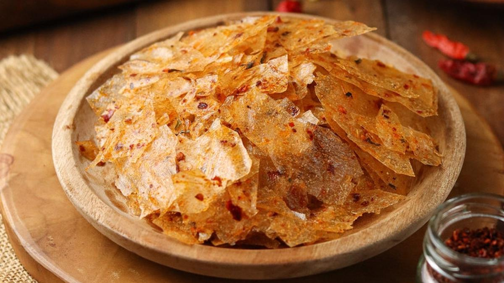

Kripca legendaris dengan bumbu rempah daun jeruk segar dan cabai murni asli. Dijamin kriuknya pecah di mulut tanpa bikin serak!

Beda dari keripik kaca biasa, kami punya standar kualitas premium!
Diproses higienis menghasilkan tekstur kaca yang transparan, super tipis, dan renyah sempurna.
Taburan daun jeruk dicincang halus memberikan aroma wangi khas yang langsung menggugah selera.
Menggunakan minyak cabai asli pilihan dengan tingkat kepedasan yang bisa kamu pilih sendiri.
Testimoni jujur dari pelanggan setia KripsKaca
"Sumpah ini kripca terenak di Tangsel! Tipis banget, gak keras di gigi, dan daun jeruknya berasa wangi banget."
"Pesan level extra pedas buat temen ngerjain tugas malam-malam, langsung melek! Pedasnya nagih pol."
"Pengirimannya cepat, packing aman pakai bubble wrap jadi gak hancur sampai rumah. Bakal langganan!"
Ada hal yang ingin kamu ketahui sebelum order?
Bisa banget! Kami melayani pengiriman ke seluruh wilayah Indonesia menggunakan ekspedisi terpercaya dengan packing aman.
Tentu saja! Kami menyediakan harga khusus bagi kamu yang ingin bergabung menjadi reseller atau dropshipper KripsKaca.
KripsKaca bertahan hingga 2-3 bulan dalam kemasan tertutup rapat dan kedap udara di suhu ruangan.